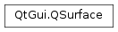

QSurface¶
Inherited by: QWindow, QtDataVisualization.QAbstract3DGraph, QtDataVisualization.Q3DSurface, QtDataVisualization.Q3DBars, QtDataVisualization.Q3DScatter, Qt3DExtras.Qt3DWindow, QQuickWindow, QQuickView, QOffscreenSurface
Synopsis¶
Functions¶
- def
supportsOpenGL() - def
surfaceClass()
Virtual functions¶
- def
format() - def
size() - def
surfaceHandle() - def
surfaceType()
Detailed Description¶
The
PySide2.QtGui.QSurfaceclass is an abstraction of renderable surfaces in Qt.The size of the surface is accessible with the
PySide2.QtGui.QSurface.size()function. The rendering specific attributes of the surface are accessible through thePySide2.QtGui.QSurface.format()function.
-
class
PySide2.QtGui.QSurface(type)¶ Parameters: type – PySide2.QtGui.QSurface.SurfaceClassCreates a surface with the given
type.
-
PySide2.QtGui.QSurface.SurfaceClass¶ The enum describes the actual subclass of the surface.
Constant Description QSurface.Window The surface is an instance of PySide2.QtGui.QWindow.QSurface.Offscreen The surface is an instance of PySide2.QtGui.QOffscreenSurface.
-
PySide2.QtGui.QSurface.SurfaceType¶ The enum describes what type of surface this is.
Constant Description QSurface.RasterSurface The surface is is composed of pixels and can be rendered to using a software rasterizer like Qt’s raster paint engine. QSurface.OpenGLSurface The surface is an OpenGL compatible surface and can be used in conjunction with PySide2.QtGui.QOpenGLContext.QSurface.RasterGLSurface The surface can be rendered to using a software rasterizer, and also supports OpenGL. This surface type is intended for internal Qt use, and requires the use of private API. QSurface.OpenVGSurface The surface is an OpenVG compatible surface and can be used in conjunction with OpenVG contexts. QSurface.VulkanSurface The surface is a Vulkan compatible surface and can be used in conjunction with the Vulkan graphics API.
-
PySide2.QtGui.QSurface.m_type¶
-
PySide2.QtGui.QSurface.format()¶ Return type: PySide2.QtGui.QSurfaceFormatReturns the format of the surface.
-
PySide2.QtGui.QSurface.size()¶ Return type: PySide2.QtCore.QSizeReturns the size of the surface in pixels.
-
PySide2.QtGui.QSurface.supportsOpenGL()¶ Return type: PySide2.QtCore.boolReturns true if the surface is OpenGL compatible and can be used in conjunction with
PySide2.QtGui.QOpenGLContext; otherwise returns false.
-
PySide2.QtGui.QSurface.surfaceClass()¶ Return type: PySide2.QtGui.QSurface.SurfaceClassReturns the surface class of this surface.
-
PySide2.QtGui.QSurface.surfaceHandle()¶ Return type: PySide2.QtGui.QPlatformSurfaceReturns a handle to the platform-specific implementation of the surface.
-
PySide2.QtGui.QSurface.surfaceType()¶ Return type: PySide2.QtGui.QSurface.SurfaceTypeReturns the type of the surface.
© 2018 The Qt Company Ltd. Documentation contributions included herein are the copyrights of their respective owners. The documentation provided herein is licensed under the terms of the GNU Free Documentation License version 1.3 as published by the Free Software Foundation. Qt and respective logos are trademarks of The Qt Company Ltd. in Finland and/or other countries worldwide. All other trademarks are property of their respective owners.